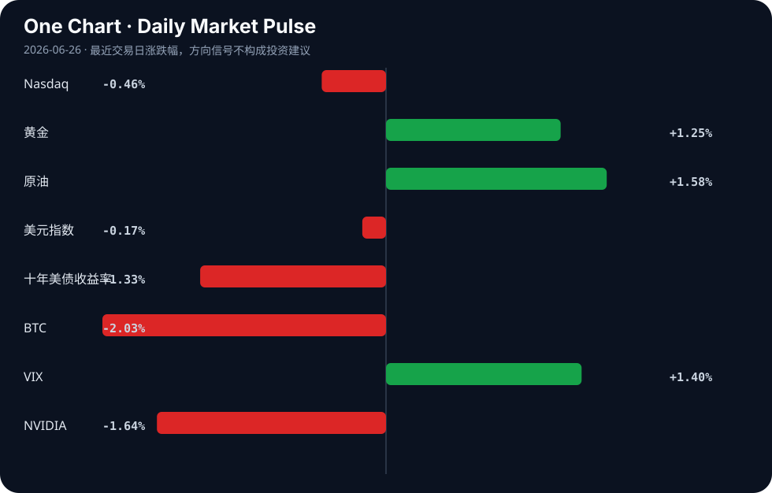

Daily Intelligence
2026-06-26｜Friday
Today’s Thesis｜今日一句话
AI正陷入“落地幻觉”与“资本狂热”的严重背离：企业端转型成功率不足5%与消费端超90%差评，正倒逼资本从模型军备竞赛转向治理、幻觉纠偏与物理基础设施。
① Executive Summary｜30 秒
- AI：AI应用遭遇信任与成效双重危机（<5%转型成果，>90%差评），资本开始从大模型军备竞赛转向专攻幻觉与合规的初创公司[A1][A10][A17]。
- 商业：地缘政治重塑技术与供应链，法国暂停阿里AI测试、欧盟重构采购机制，迫使企业从单一技术研发转向全生态能力建设[A5][A7][A8]。
- 宏观：全球央行持续重定价致避险资产逻辑生变（黄金跌破4000），而AI算力需求与能源成本的矛盾正成为新的宏观通胀变量[B3][B21]。
② AI Daily
AI落地遭遇信任墙，资本急转弯
What Happened 超90%提及AI的客户评价为负面[A1]，不到5%的公司报告AI带来“转型”成果[A10]；与此同时，Scaled Cognition获1亿美元融资专攻AI幻觉[A17]，5亿美元基金推动工人AI再培训[A16]。
Why It Matters 狂热叙事与惨淡落地形成巨大反差，证明当前AI的边际效益在消费端和通用企业端接近枯竭，可靠性与组织适配性成为核心瓶颈，而非模型参数量。
Second-order Effect 企业AI预算从“模型训练”转向“护栏与纠偏” → 专攻幻觉与合规的初创公司估值重估 → 大模型C端订阅退潮，B端垂直场景整合商崛起。
AI模型的地缘政治化
What Happened 法国财政部以“中国倾向”为由暂停测试阿里AI模型[A8]；中国呼吁在AI全球治理中成为规则制定者[A7]。
Why It Matters AI模型已成为主权延伸的载体，数据与价值观的边界正在固化，技术脱钩从硬件（算力芯片）正式蔓延至模型应用层。
Second-order Effect 地缘审查加码 → 跨国云与模型服务商被迫分区域维护独立模型 → 全球AI标准碎片化，出海合规成本激增。
AI的物理化与能源吞噬
What Happened BlackBerry营收因“物理AI”跳涨26%[A24]；AI算力需求可能推高居民电费[A21]；AI正从聊天机器人变为车间同事重构供应链[A3]。
Why It Matters AI正在从数字域向物理域（工厂、电网、自动驾驶）渗透，但其高昂的能源强度开始与民生资源产生直接冲突，算力成本不再仅是CAPEX，而是宏观能源变量。
Second-order Effect 算力扩张推高区域电价 → 民生与科技巨头争夺电力配额 → 倒逼数据中心向新能源富集区或海外迁移。
③ Business Daily
科技
OpenAI倾向于将IPO推迟至明年[A15]，反映在宏观利率高企与盈利模式未稳的交叉点上，顶级AI公司选择延后定价。AI人才需求正从“单一技术研发”向“全生态能力”延展[A5]，纯算法团队估值见顶。
制造
AI从聊天机器人转向车间，重构供应链韧性[A3][A18]。这并非简单的自动化，而是将AI嵌入排产、物流与库存决策，以对冲地缘脱钩带来的断链风险。
能源
Valgotech宣布在印第安纳州新建硫电池产线[B6]，试图填补AI与电网冲击下的储能缺口；铜价因AI贸易乐观情绪上涨[B21]，但央行紧缩恐惧同时施压，资源股在通胀与利率的夹缝中定价。
医疗
Medicare的AI试点证明：审批容易，支付困难[A19]。这揭示了AI在强监管行业的典型困境——算法可以加速流程，但无法绕过既有的支付利益链与责任归属。
④ Macro Observation｜机制分析
世界正在发生什么？ 黄金跌破4000美元核心支撑[B3]，前端收益率上升和央行重定价削弱避险需求；同时，日经创新高而日本央行加码紧缩[B23]，印尼面临超5万人裁员危机[B11]。
为什么发生？ 全球资本正在重估“滞胀”的概率：AI算力推升铜价与电力成本（通胀粘性）[B21][A21]，而央行（如日本、巴西）在通胀前退缩或犹豫，导致长短端利率博弈加剧与市场混乱[B12][B23]。
资本如何流动？ 资本正从纯软件AI概念流向有物理资产支撑的算力基础设施（铜、电网、硫电池）[B6][B21]，以及具备确定性的宏观情绪数据集[B5]。避险资金不再单向流入黄金，而是寻找新锚定物。
接下来关注什么？ 关注“AI通胀反身性”：AI推高能源/金属价格 → 核心通胀难降 → 央行维持高利率 → 压制AI企业利润与估值。事实是黄金跌破4000与铜价上涨；推断是AI是推高电价的核心因素，这需后续电价结构数据验证。
⑤ Signal Dashboard
| 指标 | 最新值 | 今日 | 信号 |
|---|---|---|---|
| Nasdaq | 25,358.60 | ↓ -0.46% | 风险偏好降温 |
| 黄金 | 4,040.10 | ↑ +1.25% | 避险/通胀对冲增强 |
| 原油 | 71.45 | ↑ +1.58% | 通胀压力上升 |
| 美元指数 | 101.44 | ↓ -0.17% | 外部压力缓解 |
| 十年美债收益率 | 4.39 | ↓ -1.33% | 利好久期资产 |
| BTC | 59,758.78 | ↓ -2.03% | 风险偏好降温 |
| VIX | 18.89 | ↑ +1.40% | 避险升温 |
| NVIDIA | 195.74 | ↓ -1.64% | 风险偏好降温 |
⑥ Deep Insight
AI的“物理化”与能源反身性陷阱
当前市场对AI的定价仍停留在“软件革命”的叙事中，认为其将带来无尽的生产力通缩。然而，一个容易被忽略的非共识视角是：AI正在从通缩力量反转为通胀力量，且这一过程具有强烈的反身性。
随着AI从聊天机器人走向“车间里的同事”[A3]与“物理AI”[A24]，其运行载体从云端服务器扩展至工厂机器人、自动驾驶和实时电网调度。这一物理化进程对能源和基础金属的消耗呈指数级增长。铜价因AI贸易乐观情绪而上涨[B21]，AI甚至可能直接推高居民电费[A21]。这意味着，AI不再是只消耗算力的代码，而是与民生抢夺电力、与制造业抢夺铜的实体“巨兽”。
这就形成了一个致命的反身性陷阱：资本押注AI算力扩张 → 算力推升电力与金属需求 → 基础资源价格大涨引发通胀粘性 → 央行被迫维持高利率（如日银加码紧缩[B23]） → 高利率反噬AI企业的资本开支与估值，同时压制宏观总需求。
在这个循环中，AI的物理化越成功，其对宏观流动性的抽血就越严重。5%的转型成功率[A10]与90%的差评[A1]说明当前AI的软性产出根本无法覆盖其硬性资源成本。当华尔街发现AI的毛利率受制于电费和铜价时，当前的估值逻辑将面临重估。
反方观点认为，技术进步终将解决能源瓶颈，例如硫电池等新型储能的扩产[B6]将平滑电力峰值，且AI最终会通过优化电网和供应链实现净节能，长期仍是通缩的。
证伪条件：1. 未来两年内，数据中心PUE（能源使用效率）出现断崖式下降，且新型储能大规模商用，使算力边际能源成本趋近于零；2. 核心通胀数据在算力大扩张的背景下持续回落，证明AI的效率红利大于其资源消耗。
⑦ Tomorrow Watch
1. 验证OpenAI是否正式宣布推迟IPO至2027年[A15]。
2. 观测黄金是否能收复4000美元关口，或继续受前端收益率压制[B3]。
3. 追踪法国财政部对阿里AI模型的最终审查决定，是否从暂停转为永久禁用[A8]。
4. 关注印尼超5万人的裁员预警是否转化为实际失业数据[B11]。
5. 比较AMD、Broadcom、Nvidia在AI计算股争夺战中的下一季度资本支出指引[A20]。
⑧ One Chart

图表显示了主要资产类别的近期脉冲方向。黄金与原油的同向上涨与纳指及BTC的下跌并存，暗示宏观资金在通胀预期与风险偏好之间出现分化，并非简单的风险-on/off二元逻辑。
⑨ Quote of the Day
“The future is already here — it is just not evenly distributed.”
— William Gibson
⑩ Action Items｜今天值得思考什么
1. 思考：AI的物理化扩张是否正在侵蚀你所在行业的能源成本优势？
2. 验证：企业AI转型不足5%的瓶颈，究竟是模型能力不足，还是组织结构与数据治理未就绪[A10]？
3. 追踪：欧盟公共采购机制重构[B8]对中国科技企业出海订单的实际挤出效应。
4. 比较：专攻AI幻觉与合规的初创公司[A17]与基础大模型公司的估值倍数差异。
5. 关注：央行紧缩立场（如日银[B23]）与AI算力通胀逻辑的博弈对长久期资产的压制程度。
信息边界
本报告信息来源于公开新闻聚合，覆盖AI产业动态、全球宏观政策及市场情绪，时效截至2026年6月25日晚间。市场数据反映最近交易日收盘或盘中情况。重要地缘政治及金融判断基于新闻摘要推断，读者需回到原文验证事实完整性。
Sources
AI
- A1：On Your Side: Over 90% of customer reviews mentioning AI services express negative experiences. - clipped version - KY3 — Google News · AI
- A3：从“聊天机器人”到“车间里的同事” 人工智能如何重构供应链韧性 - 中国青年网 — Google News · AI 中文
- A5：科锐国际陆同伟：AI人才需求正从“单一技术研发”向“全生态能力”延展 - cb.com.cn — Google News · AI 中文
- A7：AI全球治理，中国要成为规则制定者 - 新浪财经 — Google News · AI 中文
- A8：法国财政部暂停测试阿里AI模型 涉“中国倾向”引起争议 - RFI — Google News · AI 中文
- A10：This week in 5 numbers: Not even 5% of companies report ‘transformational’ outcomes from AI - HR Dive — Google News · AI
- A15：OpenAI Leans Toward Holding Up I.P.O. Until Next Year - The New York Times — Google News · AI
- A16：A new $500 million push to retrain workers for an AI-driven future - The Independent — Google News · AI
- A17：Scaled Cognition Raises $100 Million to Address AI Hallucinations - PYMNTS.com — Google News · AI
- A18：AI on the Factory Floor: A Primer for Manufacturers - The National Law Review — Google News · AI
- A19：Medicare’s AI Pilot Proves Approvals Are Easy. Payments Are Hard. - PYMNTS.com — Google News · AI
- A20：Battle of the Artificial Intelligence (AI) Computing Companies: Is AMD, Broadcom, Nvidia, or Marvell the Best Stock to Buy Now? - Yahoo Finance — Google News · AI
- A21：WHAT THE TECH? Could Artificial Intelligence Raise Your Electric Bill? - Local 3 News — Google News · AI
- A24：BlackBerry Dials Into Physical AI as Revenues Jump 26% - PYMNTS.com — Google News · AI
Business & Macro
- B3：Gold slips below $4,000 as higher front-end yields and central bank repricing dent haven demand - VT Markets — Google News · Markets Policy
- B5：Permutable Launches Global Macro Sentiment Indices, an AI-Native Dataset for Tracking Inflation, Policy and FX Risk Before Official Data Catches Up - markets.businessinsider.com — Google News · Markets Policy
- B6：Valgotech Announces New Indiana Battery Production Facility to Expand Domestic Sulfur Battery Manufacturing - markets.businessinsider.com — Google News · Technology Business
- B8：欧盟公共采购机制：从产业政策到市场准入重构的系统性转向 - 风闻 — Google News · 行业
- B11：INDONESIA Employment crisis with more than 50,000 people at risk of layoffs - AsiaNews.it — Google News · Global Economy
- B12：Brazil central bank says policy horizon unchanged after market confusion - Reuters — Google News · Markets Policy
- B21：Copper Prices Rise on AI Trade Optimism Amid Central Bank Tightening Fears - News and Statistics - IndexBox — Google News · Markets Policy
- B23：Nikkei reaches new record as BoJ intensifies its restrictive stance - equiti.com — Google News · Markets Policy